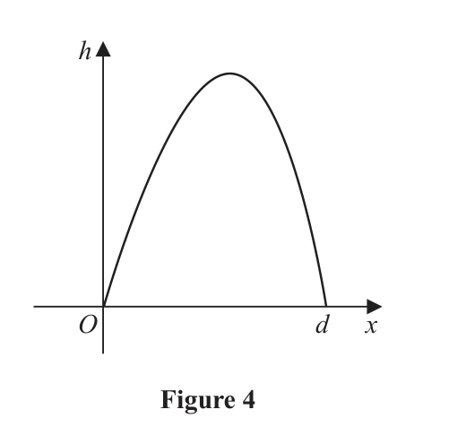
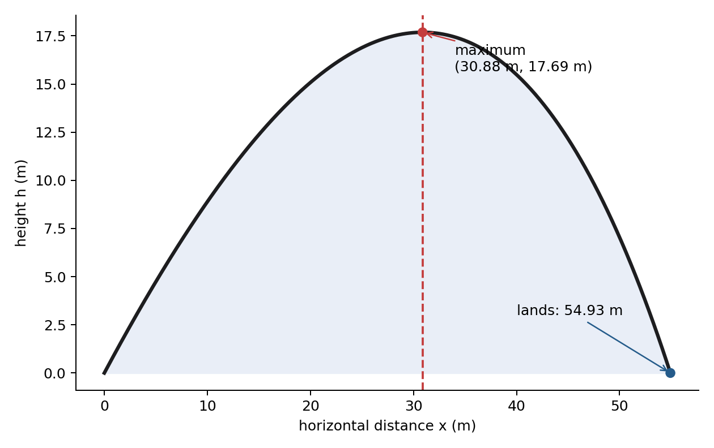

Figure 4 is a graph showing the path of a golf ball after the ball has been hit until it first hits the ground.
The vertical height, $h$ metres, of the ball above the ground has been plotted against the horizontal distance travelled, $x$ metres, measured from where the ball was hit.
The ball travels a horizontal distance of $d$ metres before it first hits the ground.
The ball is modelled as a particle travelling in a vertical plane above horizontal ground.
The path of the ball is modelled by the equation
$$h=1.5x-0.5xe^{0.02x}\qquad 0\leq x\leq d$$Use the model to answer parts (a), (b) and (c).
(a) Find the value of $d$, giving your answer to 2 decimal places.
(Solutions relying entirely on calculator technology are not acceptable.) (3)
(b) Show that the maximum value of $h$ occurs when
$$x=50\ln\left(\frac{150}{x+50}\right)$$(4)
Using the iteration formula
$$x_{n+1}=50\ln\left(\frac{150}{x_n+50}\right)\qquad\text{with }x_1=30$$(c) (i) find the value of $x_2$ to 2 decimal places,
(ii) find, by repeated iteration, the horizontal distance travelled by the golf ball before it reaches its maximum height. Give your answer to 2 decimal places. (3)
Status: (a) and (b) jointly completed / tutor-corrected; (c) deferred
[10 marks: (a)3, (b)4, (c)3]
At ground level $h=0$. At the landing point $x=d$:
$$0=1.5d-0.5de^{0.02d}=0.5d(3-e^{0.02d}).$$The factor $d=0$ is the launch point, not the later point where the ball first returns to the ground. Therefore use the non-zero factor:
$$3-e^{0.02d}=0\Rightarrow e^{0.02d}=3.$$Apply natural logarithms:
$$0.02d=\ln3,\qquad d=\frac{\ln3}{0.02}=54.930614\ldots$$At an interior maximum, $dh/dx=0$. For the product $xe^{0.02x}$, use $(uv)'=u'v+uv'$ and $(e^{0.02x})'=0.02e^{0.02x}$:
$$\frac{dh}{dx}=1.5-0.5\left(e^{0.02x}+0.02xe^{0.02x}\right)$$ $$=1.5-0.5e^{0.02x}-0.01xe^{0.02x}.$$Set the derivative equal to zero and factor $e^{0.02x}$:
$$0=1.5-e^{0.02x}(0.5+0.01x),$$ $$e^{0.02x}(0.5+0.01x)=1.5.$$Divide by the complete bracket:
$$e^{0.02x}=\frac{1.5}{0.5+0.01x}=\frac{150}{50+x}.$$Taking natural logarithms gives
$$0.02x=\ln\left(\frac{150}{50+x}\right).$$Since $1/0.02=50$:
$$x=50\ln\left(\frac{150}{x+50}\right).$$Not covered in the lesson — official-reference reconstruction below.
Use $x_1=30$ in the printed formula:
$$x_2=50\ln\left(\frac{150}{30+50}\right)=50\ln(1.875)=31.430432\ldots$$Continue without rounding stored calculator values:
| $n$ | $x_n$ |
|---|---|
| 1 | 30.0000 |
| 2 | 31.4304 |
| 3 | 30.5443 |
| 4 | 31.0914 |
| 5 | 30.7529 |
| 6 | 30.9621 |
| 7 | 30.8327 |
| 8 | 30.9127 |
| 12 | 30.8866 |
| 20 | 30.8820 |
The iterates oscillate with decreasing size and settle at $30.88$ to 2 d.p.
